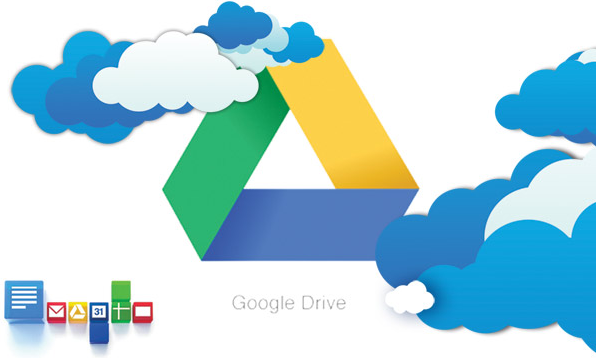

Pontos positivos para se utilizar o Google Drive

Escrever documentos, montar planilhas e apresentações, organizar arquivos em pastas são muitas das atividades comuns no cotidiano de muitos profissionais. Para facilitá-las, existem diversas ferramentas, mas uma das mais úteis é o Google Drive.